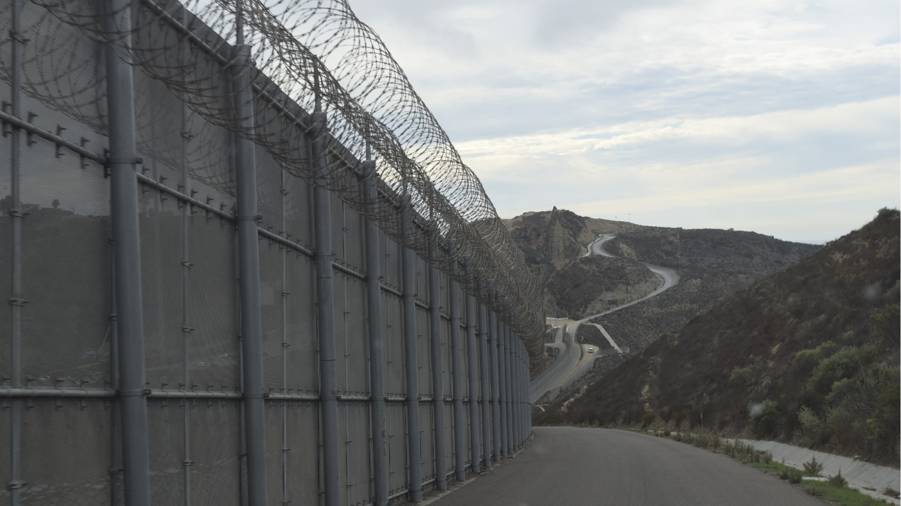
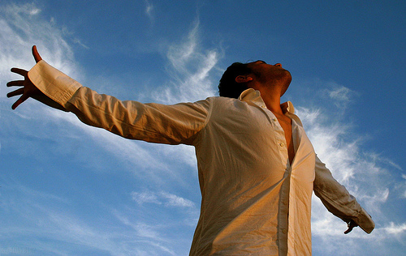
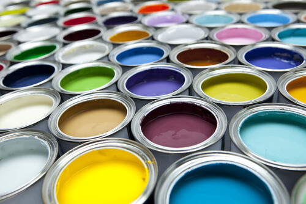
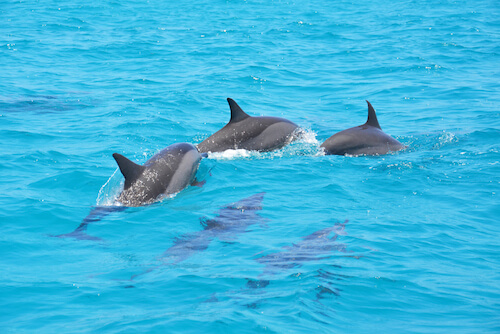
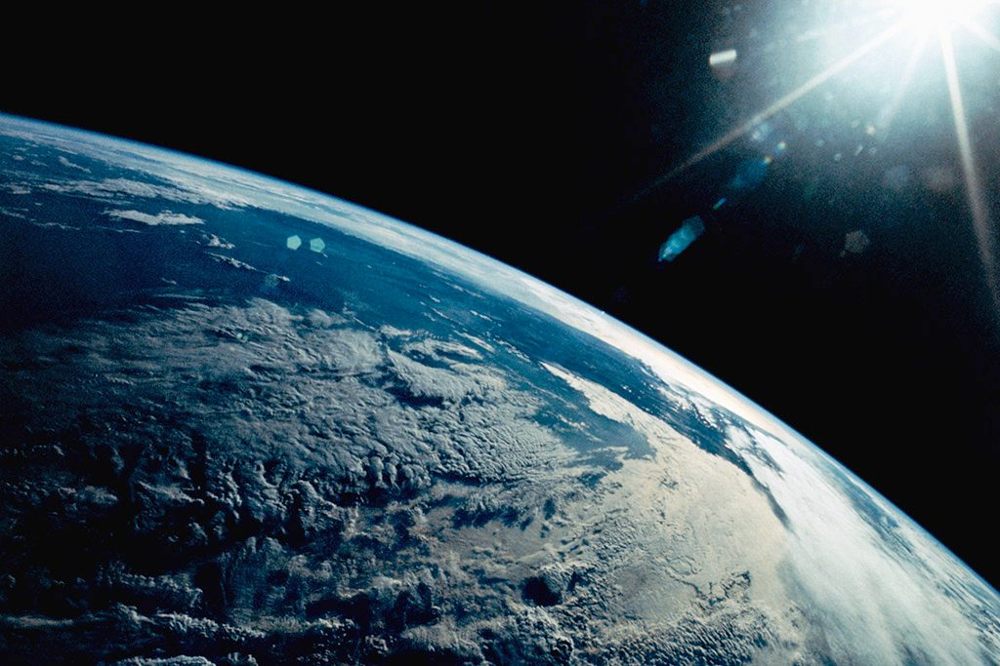
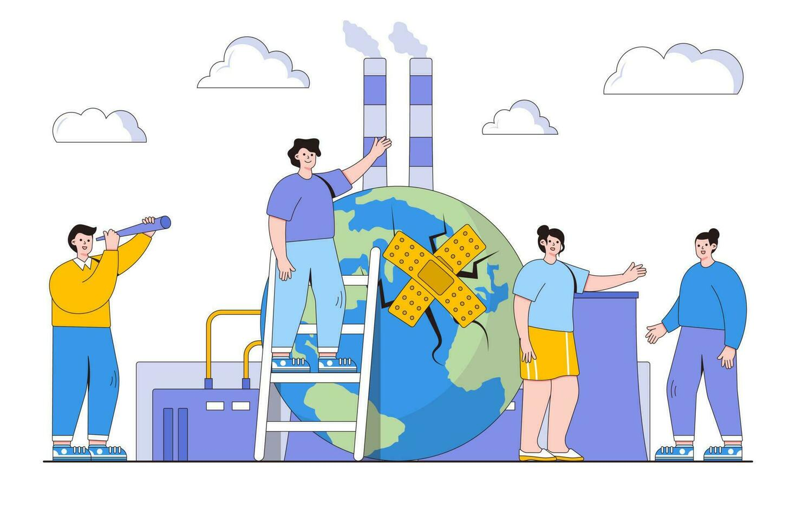
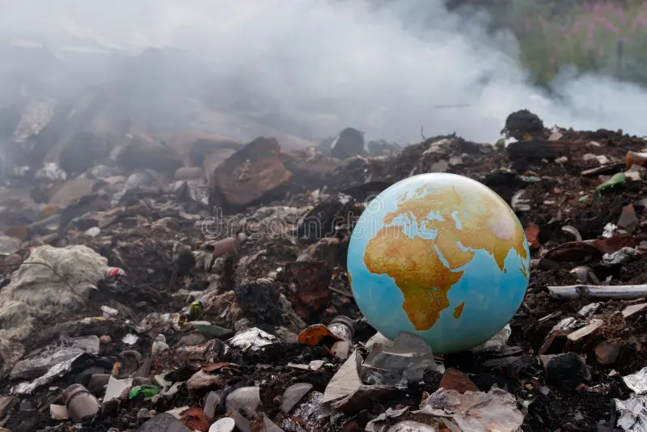
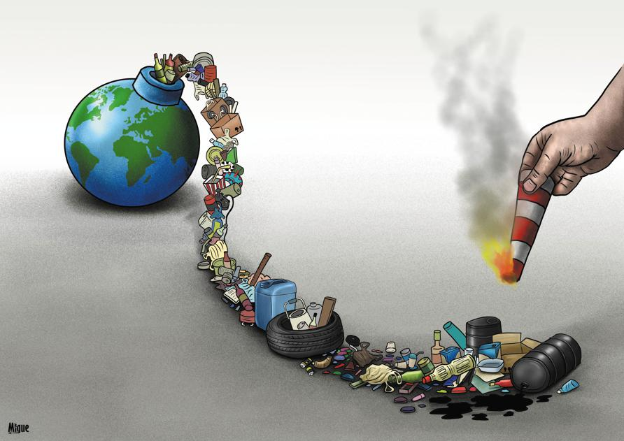

Lesson-3
I can describe the harm to our planet!Exercise 1: Discuss these questions.
- Where do you think tons of trash disappear?
- What would you do if there was a garbage on the street?
| Remain | A border |
| Variety | North |
| Surface | South |
| Oxygen | East |
| Species | West |
| Plant | To exist |




Grammar: Definite and indefinite articles
- Use a for words that begin with a consonant sound (b,c,d,f,g,j...)- Use an for words that begin with a vowel sound (a,e,o,u,i)
- Use the:
- When both speaker and listener know the thing
- When something is mentioned for the second time
- With unique things and geographical places
| A / an | The |
| I saw a cat There was an accident |
The cat was black The accident was terrible |
| Use "the" | |
| With unique things With rivers, oceans, seas, deserts, mountain ranges Official names of countries |
The sun The Black sea The Kyrgyz Republic |
| Do not use "the" | |
| plural nouns in general meaning uncountable nouns in general meaning Cities |
Cats are intelligent Water is important They visited London |
Exercise 2: Choose, a, an, or the.
- I saw ___ elephant at ___ zoo yesterday.
- She wants to become ___ engineer in ___ future.
- We stayed in ___ hotel near ___ beach.
- He bought ___ umbrella because ___ weather was rainy.
- They visited ___ Eiffel Tower during their trip to ___ Paris.
- My father is ___ doctor at ___ local hospital.
- We watched ___ interesting documentary about space.
- ___ Moon looks beautiful tonight.
- She found ___ old photo under ___ bed.
- I need ___ apple and ___ banana for breakfast.
Exercise 3: Use a, an, the where necessary.
Exercise 4: Correct the Mistakes
- I have an car.
- The cats are friendly animals.
- She is a honest person.
- We visited a Alps last summer.
- He bought the new phone yesterday.
- I saw a moon last night.
- They live in the small village near the river.
- She wants to be an teacher.
- We ate an sandwich in the park.
- The life is sometimes difficult.
Debate questions:
- Human activity is the greatest danger to Earth. Do you agree?
- Technology will save the planet.
- Protecting nature is more important than economic growth.



One unique planet
People often call Earth “the blue planet,” but have you ever wondered why our planet is so unique? Scientists continue to search for life on
other worlds, yet Earth remains the only known place where humans, animals, and plants can live together naturally. Is Earth simply a lucky
planet, or is there something truly special about it?
One reason for Earth’s uniqueness is water. About 70% of the planet is covered by water, and much of it exists in oceans, rivers, and lakes.
A traveler can stand near a glacier in the Arctic, walk through a rainforest in South America, and later visit a desert in Africa. Few planets
show such geographical variety. The Earth contains a huge range of climates and landscapes that support different forms of life.
Another important feature is the atmosphere. The atmosphere acts like a protective shield around the planet. Without it, humans would not survive
because dangerous radiation from space would reach the surface. The Earth also has the right distance from the Sun. If the planet were a little closer,
temperatures could become extremely hot. If it were farther away, the world might turn into a frozen desert.
The planet is also home to incredible natural wonders. The Himalayas are the highest mountains on Earth, while the Pacific Ocean is the largest
ocean in the world. The Amazon Rainforest produces a large amount of oxygen and supports thousands of species. A scientist studying nature can still
discover a new plant or an unknown insect in the rainforest today.
However, Earth’s uniqueness creates an important question: do humans truly protect the planet? Many forests disappear every year, and the oceans
suffer from pollution. Some people believe technology will solve environmental problems in the future. Others argue that humans must change their
lifestyles now. Should governments create stronger environmental laws? Do individuals have a responsibility to protect nature, or is it mainly the
duty of large companies?
Exercise 5: Answer to the questions below.
- Why do you think people want to explore and move to another planet?
- What geographical features make Earth unique?
- How does the atmosphere protect the planet?
- Is technology enough to solve environmental problems?
- What natural place on Earth would you most like to visit?
- Have you ever seen pollution in your town or country?
Homework



Human damage
Will nature remain strong enough to recover, or are people slowly destroying the only home they have?
One major problem is pollution. In many countries, factories release dangerous chemicals into rivers
and lakes. Plastic covers the surface of the oceans, and sea animals often mistake it for food and they die.
A scientist in the North may study melting ice, while a farmer in the South experiences long periods of drought.
Even in the East and the West, environmental problems continue to grow. Pollution does not stop at a border
because air and water move freely across the planet.
Another danger is deforestation. Every year, humans cut down millions of trees to build roads, cities, and farms.
Trees are extremely important because they produce oxygen and help control the climate. When forests disappear,
many species lose their natural habitat. A plant that existed for hundreds of years can suddenly disappear forever.
Some animals are forced to move to new areas, while others simply cannot survive.
Perhaps the biggest contradiction is that humans depend completely on nature, yet they continue to damage it.
Without clean air, water, and healthy ecosystems, life cannot exist. Earth gives humans food, oxygen, and protection,
but people often behave as if these resources are endless.
So, who is truly responsible for protecting the planet: governments, businesses, or ordinary people? And if humans
already know the consequences of environmental destruction, why do so many continue harming the Earth anyway?